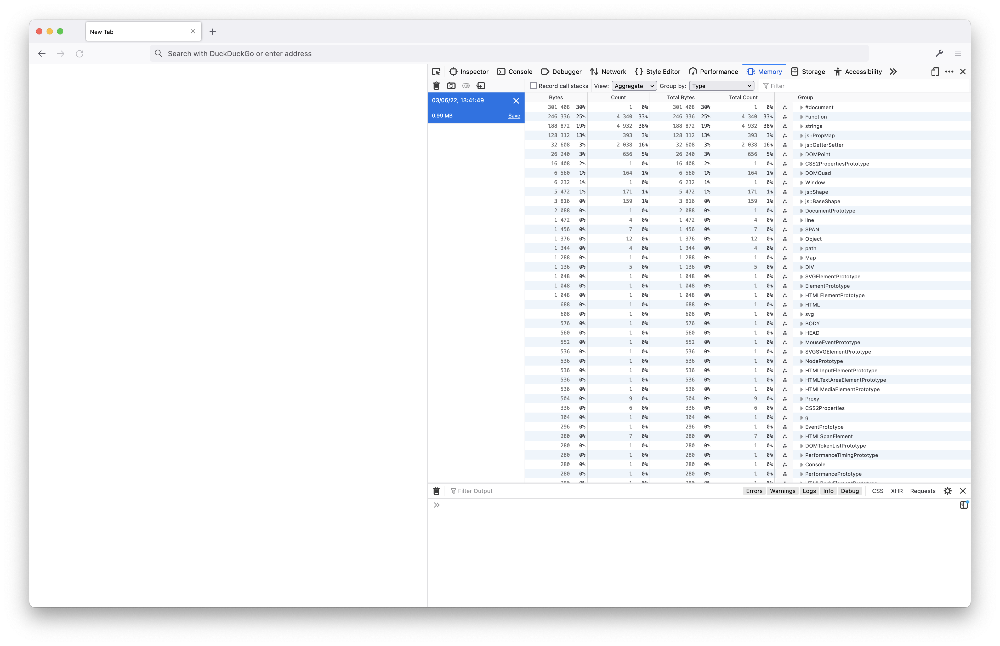
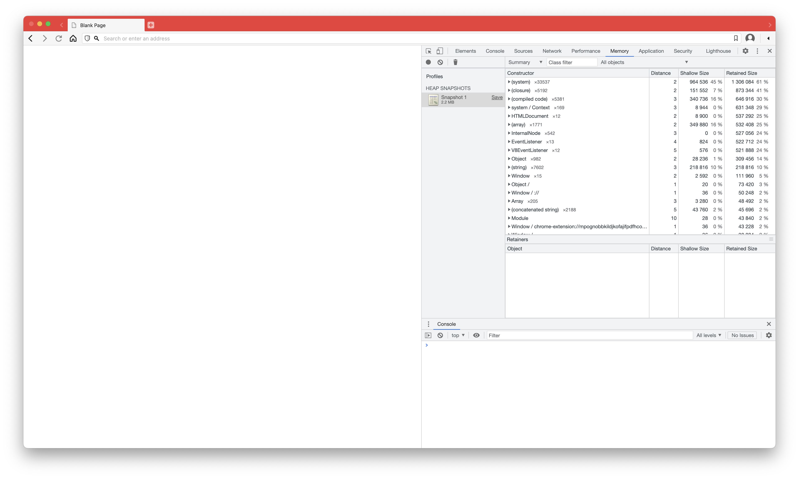
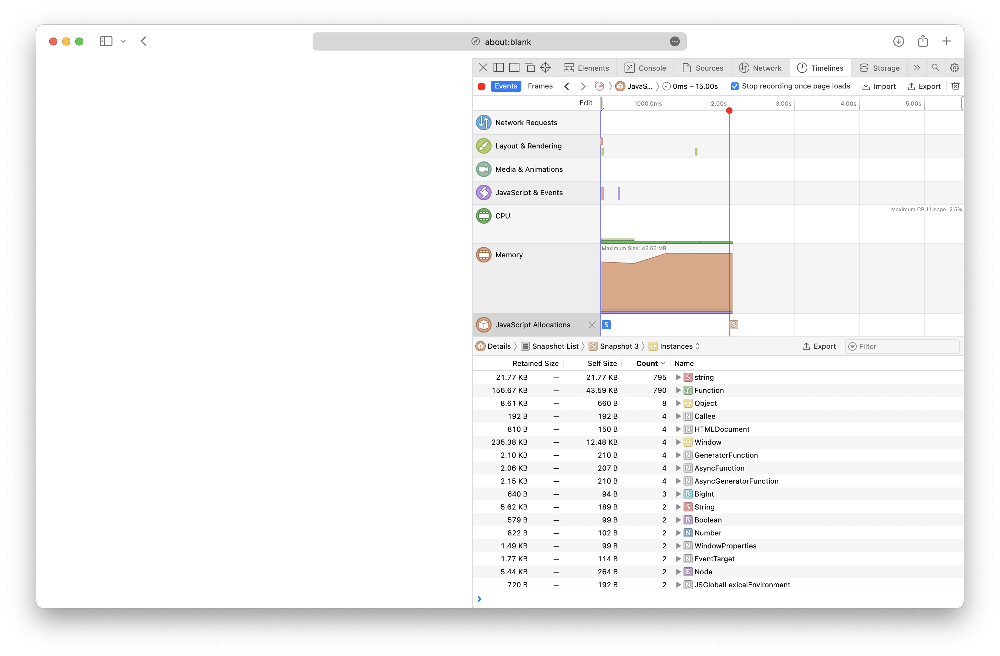

JavaScript
This is probably the easiest memory management of all — you don’t need to do anything. You make allocations without even necessarily realizing it and free them without knowing. Garbage collection is a love-hate relationship. It takes a lot less mental work to write code, but it also makes it harder to use memory optimally. JavaScript has a few features that lets you make memory management easier.
Garbage Collection
Garbage collection is typically done by counting the number of strong references there are to a chunk of memory. Once there’s 0 strong references to that memory, it can be freed at the garbage collector’s convenience. So, good code should make proper use of references to make the garbage collector’s job easier. There are two kinds of references: strong and weak. Weak references let you reference a part of memory with the expectation that the data might not exist anymore; you have to check that the data is available to use it. Strong references will always point to a valid part of memory and will make the garbage collector hold off freeing that memory until the strong references that point to it are gone.
References in JavaScript
So what does this look like in JavaScript? Well, almost everything uses a strong reference. There are only three exceptions to this, however. Namely:
WeakMapWeakSetWeakRef
WeakRef — the newest of the three — is a very basic version of this concept. It simply holds a weak reference to memory and lets you get the value by using WeakRef#deref().
WeakMap is probably the most useful, as it lets you tie data to a weak reference. For example, you can tie certain data to a HTML element, and when that element gets freed, so will that other data.
Finally, there’s WeakSet. There’s not really a “useful example” that can be given for WeakSet. It’s basically an array of weak references, but you can’t iterate over it. You can only see if a weak reference is in there.
Anyways, that’s basically all there is to references. Anything that’s a not a primitive (aka a string, boolean, number, undefined, or null) is moved around by reference. If you were curious why doing { a: 1 } == { a: 1 } gives you false, despite them looking the same, it’s because they’re comparing the reference, not the actual object keys and values.
Viewing Memory Usage in Browsers
Viewing how much memory your site uses is imperitive to making a good website. You should try to keep your site as basic as possible in all areas:
- HTML/DOM: try to limit the number of elements in the document.
- CSS: try to keep your styles simple, don't overcomplicate things!
- JavaScript: try to optimize your code to use both weak references and to do as little allocating as possible.
Do note that the number of bytes shown by browsers in their memory view is not necessarily telling of all the browser does for your site. WebKit-based browsers try to be as transparent about this as possible, while the others are more JavaScript-oriented.
Firefox
 Simply open Dev Tools and go to the Memory tab. Create a snapshot and you can view the allocations at that moment.
Chrome/Chromium
 Simply open DevTools and go to the Memory tab. Create a snapshot and you can view the allocations at that moment.
Safari/WebKit
 WebKit's memory view is hidden by default, under the Timeline view. In the Timeline view, edit the items in the sidebar and check Memory. Then do a recording and select a memory snapshot to view the allocations.
Tips
Some general tips for good memory management:
- If you only need an event to fire once, then do
addEventListener('event', handler, { once: true }). This will let the garbage collector clean it up much faster. - Try to use weak references (via
WeakMap,WeakSet, orWeakRef) whenever is reasonably possible — this will let the garbage collector clean things up quicker. - If you’re making an ArrayBuffer multiple times for the same purpose — ask yourself if you can’t just mutate one ArrayBuffer and save however many bytes of allocation.
- If you’re working with Workers and you’re passing ArrayBuffers around, see if you can transfer the data instead — or, even better, see if you can use a SharedArrayBuffer.
- Each of the functional loops (.map, .filter, .reduce, and so on) will clone the original array. Are you just using them for style or do you actually need the clone?
- And the one thing most JavaScript developers don’t want to hear: are you sure you really need a framework like React for that project? If you do, try a virtual DOM-less alternative, like Solid, Svelte, or Lit.